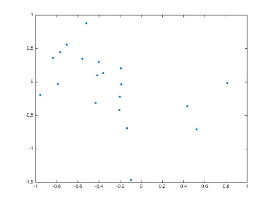
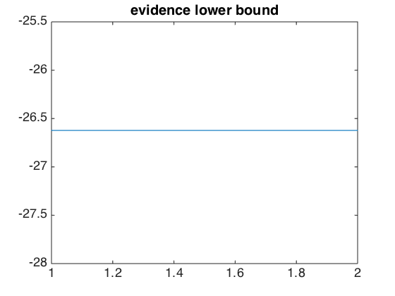
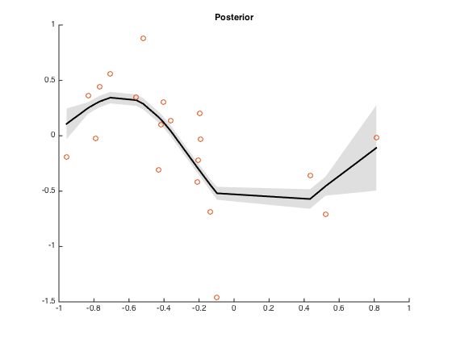
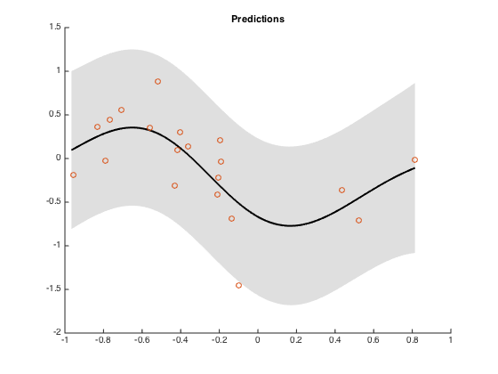

Contents
clear all; clc; % tests Trung's AVIGP code using a MoDG approximation
Loading data and general settings
path(genpath('/Users/ebonilla/Documents/research/projects/avigp/agp'), path()); data = load('data.csv'); x = data(1,:)'; y = data(2,:)'; plot(x,y, '.', 'MarkerSize', 12); rng(1110, 'twister'); [N,D] = size(x); Q = 1; % no. latent functions K = 1; % no. mixture components SIGMA_S = 0.5; % (initial) Hyperparameter L_I = 0.2; % values SIGMA_N = 0.2; % (initial) likelihood variance LEARN_HYPER = 0; % learn hyper-parameters LEARN_LIK = 0; % learn likelihood parameters % POSTMEAN0 = 0; % intialisation of posterior mean POSTCOV0 = 0.5; % and posterior covariance
Sets data and parameters
m.x = x; m.y = y; m.N = N; m.Q = Q; m.K = K; m.pars.M = POSTMEAN0*ones(N*Q,K); m.pars.L = log(sqrt(POSTCOV0)*ones(N*Q,K));
pre-processing
m.mean_y = mean(y); m.y = m.y - m.mean_y;
covariance hyperparameters
m.pars.hyp.covfunc = @covSEard;
m.pars.hyp.cov = cell(Q,1);
m.pars.hyp.cov{1} = log([sqrt(L_I)*ones(D,1); sqrt(SIGMA_S)]);
m.pars.w = log(1/K)*ones(K,1);
Likelihood function
m.likfunc = @llhGaussian; m.pars.hyp.likfunc = m.likfunc; m.pred = @mixturePredRegression; m.pars.hyp.lik = log(sqrt(SIGMA_N));
configurations
conf.nsamples = 10000; conf.covfunc = @covSEard; conf.maxiter = 100; conf.displayInterval = 10; conf.checkVarianceReduction = false; conf.latentnoise = 0; conf.learnhyp = LEARN_HYPER; conf.learnlik = LEARN_LIK;
Optimisation structures for all parameters
opts = struct('Display','iter','Method','lbfgs','MaxIter',5,... 'MaxFunEvals',100,'DerivativeCheck','off'); conf.varopts = opts; conf.varopts.Maxiter = 100; % variational parametes conf.hyperopts = opts; % hyperparameters conf.likeopts = opts; % likelihood parameters
Learning
tic; m = learnMixtureGaussians(m,conf); toc
Iteration FunEvals Step Length Function Val Opt Cond
1 2 7.61475e-05 5.80558e+03 1.17060e+04
2 3 1.00000e+00 2.30970e+03 4.69643e+03
3 4 1.00000e+00 1.26728e+03 2.59899e+03
4 5 1.00000e+00 6.11831e+02 1.32929e+03
5 6 1.00000e+00 3.59603e+02 2.09870e+03
6 7 1.00000e+00 1.70711e+02 1.80725e+03
7 8 1.00000e+00 9.08631e+01 5.43043e+02
8 9 1.00000e+00 6.04577e+01 2.41644e+02
9 10 1.00000e+00 4.35073e+01 2.66800e+02
10 12 1.85194e-01 4.17113e+01 3.89423e+02
11 13 1.00000e+00 3.19864e+01 1.22962e+02
12 14 1.00000e+00 2.95179e+01 1.08047e+02
13 15 1.00000e+00 2.94118e+01 1.85875e+02
14 16 1.00000e+00 2.86873e+01 2.95422e+01
15 17 1.00000e+00 2.86559e+01 2.12939e+01
16 18 1.00000e+00 2.86116e+01 2.44120e+01
17 19 1.00000e+00 2.85326e+01 4.19031e+01
18 20 1.00000e+00 2.83063e+01 7.38438e+01
19 21 1.00000e+00 2.78853e+01 9.88460e+01
20 22 1.00000e+00 2.75722e+01 1.65519e+02
21 23 1.00000e+00 2.69989e+01 7.30685e+01
22 24 1.00000e+00 2.68074e+01 3.49431e+01
23 25 1.00000e+00 2.67690e+01 5.53837e+00
24 26 1.00000e+00 2.67673e+01 5.29506e+00
25 27 1.00000e+00 2.67583e+01 1.23776e+01
26 28 1.00000e+00 2.67454e+01 1.90674e+01
27 29 1.00000e+00 2.67190e+01 2.47367e+01
28 31 3.56900e-01 2.67101e+01 2.70232e+01
29 32 1.00000e+00 2.66861e+01 1.73075e+01
30 33 1.00000e+00 2.66748e+01 6.00858e+00
31 34 1.00000e+00 2.66712e+01 5.43036e+00
32 35 1.00000e+00 2.66689e+01 7.15242e+00
33 36 1.00000e+00 2.66649e+01 6.82359e+00
34 37 1.00000e+00 2.66607e+01 5.21350e+00
35 38 1.00000e+00 2.66585e+01 8.83816e+00
36 39 1.00000e+00 2.66557e+01 6.51253e+00
37 40 1.00000e+00 2.66518e+01 8.98203e+00
38 41 1.00000e+00 2.66430e+01 1.33472e+01
39 42 1.00000e+00 2.66329e+01 1.27780e+01
40 43 1.00000e+00 2.66262e+01 6.03579e+00
41 44 1.00000e+00 2.66250e+01 1.33249e+00
42 45 1.00000e+00 2.66249e+01 1.27905e+00
43 46 1.00000e+00 2.66248e+01 1.68646e+00
44 47 1.00000e+00 2.66247e+01 2.41991e+00
45 48 1.00000e+00 2.66244e+01 2.70902e+00
46 50 2.93685e-01 2.66243e+01 3.19017e+00
47 51 1.00000e+00 2.66240e+01 1.78107e+00
48 52 1.00000e+00 2.66238e+01 5.64732e-01
49 53 1.00000e+00 2.66238e+01 3.46948e-01
50 54 1.00000e+00 2.66238e+01 4.50558e-01
51 55 1.00000e+00 2.66237e+01 7.26563e-01
52 56 1.00000e+00 2.66237e+01 1.11971e+00
53 57 1.00000e+00 2.66235e+01 1.64211e+00
54 58 1.00000e+00 2.66233e+01 2.06018e+00
55 59 1.00000e+00 2.66231e+01 2.15205e+00
56 61 3.51791e-01 2.66230e+01 1.44717e+00
57 62 1.00000e+00 2.66229e+01 5.53048e-01
58 63 1.00000e+00 2.66229e+01 3.38158e-02
59 64 1.00000e+00 2.66229e+01 3.49873e-02
60 69 0.00000e+00 2.66229e+01 3.49873e-02
Step Size below TolX
variational change m= 0.2865
variational change s= 3.1216
ELBO = -26.6229
Iteration FunEvals Step Length Function Val Opt Cond
1 7 0.00000e+00 2.66229e+01 3.49873e-02
Step Size below TolX
variational change m= 0.0000
variational change s= 0.0000
ELBO = -26.6229
Elapsed time is 6.157184 seconds.
 post-processing
m.pars.M = m.pars.M + m.mean_y;
Posterior
figure; hold on; mu = m.pars.M; sigma = exp(2*m.pars.L); plotMeanAndStd(m.x,mu,2*sqrt(sigma),[7 7 7]/8); plot(m.x, m.y, 'o'); title('Posterior');
Predictions
range = (min(m.x) - 0.01 : 0.01 : max(m.x) + 0.01)'; [fmu,~,yvar] = feval(m.pred, m, conf, range); figure; hold on; plotMeanAndStd(range,fmu,2*sqrt(yvar),[7 7 7]/8); plot(m.x, m.y, 'o'); title('Predictions'); fprintf('Final ELBO = %.4f\n', m.fval(end));
Final ELBO = -26.6229